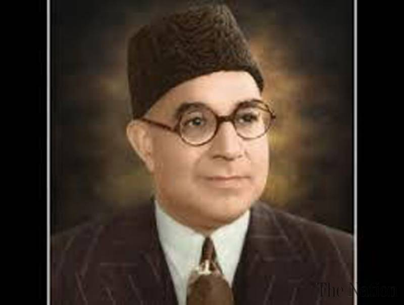
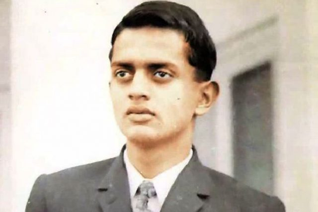
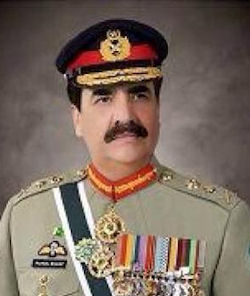
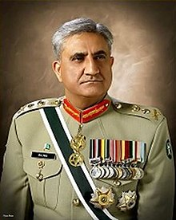
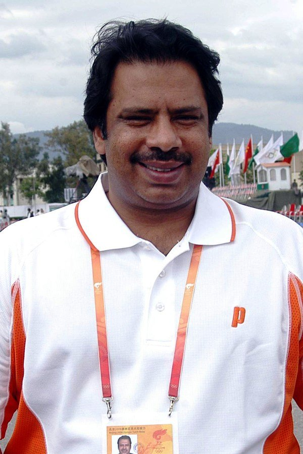
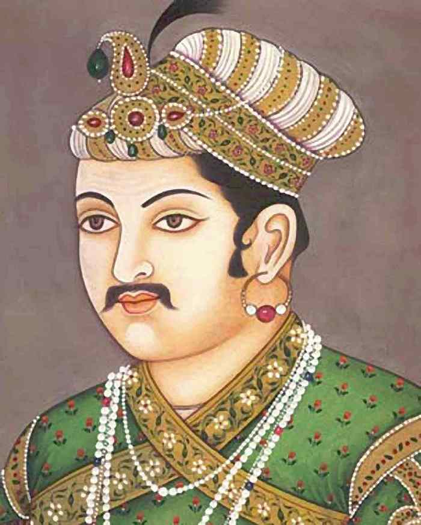

NATIONAL HEROES

Muhammad Ali Jinnah (born Mahomedali Jinnahbhai; 25 December 1876 – 11 September 1948) was a barrister, politician and the founder of Pakistan. Jinnah served as the leader of the All-India Muslim League from 1913 until Pakistan's creation on 14 August 1947, and then as Pakistan's first Governor-General until his death

Sir Muhammad Iqbal (November 9, 1877 – April 21, 1938), widely known as Allama Iqbal, was a Muslim poet and philosopher. He became the national poet of Pakistan. He is also known as the poet of East. ... His vision of an independent state for the Muslims of British India was a starting point for the creation of Pakistan.

Nawabzada Liaquat Ali Khan (Næʍābzādāh Liāqat Alī Khān About this soundlisten (help·info),Urdu: لِیاقت علی خان ; 1 October 1895 – 16 October 1951), widely known as Quaid-e-Millat (Leader of the Nation) and Shaheed-e-Millat[1] (Urdu: شہِیدِ مِلّت Martyr of the Nation), was one of the leading founding fathers of Pakistan,[2] statesman, lawyer, and political theorist who became the first Prime Minister of Pakistan;

Pilot Officer Rashid Minhas(Urdu: راشد منہاسb. 17 February 1951 – 20 August 1971) NH, was a military officer in the Pakistan Air Force (PAF). Minhas was the only PAF officer to receive the highest valour award, the Nishan-e-Haider.
Born: 17 February 1951, Karachi.
Nationality: Pakistan.

Raheel Sharif NI(M), HI(M), is a retired Pakistan Army four-star general who served as the 9th Chief of Army Staff of the Pakistan Army. He is considered as one of the most popular army generals in the country's history.
Sibling: Shabbir Sharif, Mumtaz Sharif
Born: 16 June 1956, Quetta
Education: Government College University, La...
Nationality: Pakistan.

Imran Ahmed Khan Niazi HI PP (Urdu: عمران احمد خان نیازی; born 5 October 1952) is the 22nd and current Prime Minister of Pakistan and the chairman of the Pakistan Tehreek-e-Insaf (PTI). ... Khan retired from cricket in 1992, as one of Pakistan's most successful players.
Founded: Pakistan Tehreek-e-Insaf, Namal Inst...
Born: 5 October 1952, Lahore
Team: Pakistan national cricket team.
>

General Qamar Javed Bajwa (born 11 November 1960), NI(M), HI(M), is a Pakistani general who is the 10th and current Chief of Army Staff (COAS; the army head) of the Pakistan Army since 29 November 2016. In 2018, he was ranked as the 68th most influential person in the world by Forbes magazine.
Education: F. G. Sir Syed College, Pakistan Mil...
Born: 11 November 1960, Karachi Sindh.
Nationality: Pakistan.
Profession: Military Officer.

Shahid Afridi (Urdu: شاہدآفریدی), born Sahibzada Mohammad Shahid Khan Afridi on 1 March 1975) is a Pakistani cricketer. He played 27 Tests, 350 One Day Internationals, and 59 Twenty20 Internationals (T20Is) for the Pakistani national team between 1996 and 2012.
Team: Pakistan national cricket Team.
Nationality: Pakistan.
Sport: Cricket.
Born: 1 March 1975.

Jahangir Khan (Pashto / Urdu: جهانگير خان; born 10 December 1963 in Karachi, Pakistan)[1] sometimes spelled "Jehangir Khan", is a former professional squash player from Pakistan, who is considered the greatest player in the history of squash.[2][3][4] Jahangir Khan was born into a Pashtun family originally from Neway Kelay Payan, Peshawar.[5] During his career he won the World Open six times and the British Open a record ten times. From 1981 to 1986. He retired as a player in 1993, and has served as President of the World Squash Federation from 2002 to 2008, when he became Emeritus President.

Mughal dynasty, Mughal also spelled Mogul, Persian Mughūl (“Mongol”), Muslim dynasty of Turkic-Mongol origin that ruled most of northern India from the early 16th to the mid-18th century. After that time it continued to exist as a considerably reduced and increasingly powerless entity until the mid-19th century.Jan 17, 2020